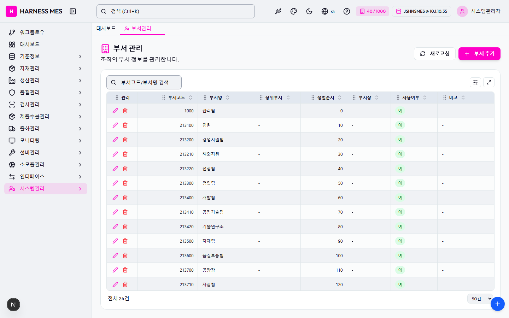

Route: /system/department
Status: PASS / HTTP 200
| 기능/버튼 | 처리 방식 | 상태 | 비고 |
|---|---|---|---|
| 화면 로드 | GET /system/department | 실행 | HTTP 200 |
| 라우트 prewarm | 직접 HTTP 확인 | 실행 | HTTP 200, 209ms |
| 초기 API 호출 | 브라우저 네트워크 수집 | 실행 | 10건 |
| 🇰🇷 | 화면 버튼 목록화 | 목록화 | 후속 메뉴별 세부 시나리오 실행 대상 |
| 시스템관리자 | 화면 버튼 목록화 | 목록화 | 후속 메뉴별 세부 시나리오 실행 대상 |
| 워크플로우 | 화면 버튼 목록화 | 목록화 | 후속 메뉴별 세부 시나리오 실행 대상 |
| 대시보드 | 화면 버튼 목록화 | 목록화 | 후속 메뉴별 세부 시나리오 실행 대상 |
| 기준정보 | 화면 버튼 목록화 | 목록화 | 후속 메뉴별 세부 시나리오 실행 대상 |
| 자재관리 | 화면 버튼 목록화 | 목록화 | 후속 메뉴별 세부 시나리오 실행 대상 |
| 생산관리 | 화면 버튼 목록화 | 목록화 | 후속 메뉴별 세부 시나리오 실행 대상 |
| 품질관리 | 화면 버튼 목록화 | 목록화 | 후속 메뉴별 세부 시나리오 실행 대상 |
| 검사관리 | 화면 버튼 목록화 | 목록화 | 후속 메뉴별 세부 시나리오 실행 대상 |
| 제품수불관리 | 화면 버튼 목록화 | 목록화 | 후속 메뉴별 세부 시나리오 실행 대상 |
| 출하관리 | 화면 버튼 목록화 | 목록화 | 후속 메뉴별 세부 시나리오 실행 대상 |
| 모니터링 | 화면 버튼 목록화 | 목록화 | 후속 메뉴별 세부 시나리오 실행 대상 |
| 설비관리 | 화면 버튼 목록화 | 목록화 | 후속 메뉴별 세부 시나리오 실행 대상 |
| 소모품관리 | 화면 버튼 목록화 | 목록화 | 후속 메뉴별 세부 시나리오 실행 대상 |
| 인터페이스 | 화면 버튼 목록화 | 목록화 | 후속 메뉴별 세부 시나리오 실행 대상 |
| 시스템관리 | 화면 버튼 목록화 | 목록화 | 후속 메뉴별 세부 시나리오 실행 대상 |
| 부서관리 | 화면 버튼 목록화 | 목록화 | 후속 메뉴별 세부 시나리오 실행 대상 |
| 새로고침 | 화면 버튼 목록화 | 목록화 | 후속 메뉴별 세부 시나리오 실행 대상 |
| 부서 추가 | 화면 버튼 목록화 | 목록화 | 후속 메뉴별 세부 시나리오 실행 대상 |
| 전체화면 보기 | 화면 버튼 목록화 | 목록화 | 후속 메뉴별 세부 시나리오 실행 대상 |
| AI 채팅 | 화면 버튼 목록화 | 목록화 | 후속 메뉴별 세부 시나리오 실행 대상 |
| 개선요청 등록 | 화면 버튼 목록화 | 목록화 | 후속 메뉴별 세부 시나리오 실행 대상 |
| 입력 필드 | DOM 수집 | 목록화 | 2개 |
| 선택 필드 | DOM 수집 | 목록화 | 1개 |
| 목록/그리드 | DOM 수집 | 목록화 | table 1, grid 0 |
| Method | URL | Status | OK |
|---|---|---|---|
| GET | /api/health | 200 | OK |
| GET | /api/db-info | 200 | OK |
| GET | /api/health | 200 | OK |
| GET | /api/db-info | 200 | OK |
| GET | /api/system/comm-configs?commType=SERIAL&useYn=Y | 200 | OK |
| GET | /api/auth/me | 200 | OK |
| GET | /api/system/configs/active | 200 | OK |
| GET | /api/menu-categories/tree | 200 | OK |
| GET | /api/system/departments?limit=200 | 200 | OK |
| GET | /api/master/com-codes/all-active | 200 | OK |
requestfailed: GET /api/db-info net::ERR_ABORTED requestfailed: GET https://fonts.gstatic.com/s/outfit/v15/QGYvz_MVcBeNP4NJtEtq.woff2 net::ERR_ABORTED

H HARNESS MES 🇰🇷 40 / 1000 JSHNSMES @ 10.1.10.35 시스템관리자 워크플로우 대시보드 기준정보 자재관리 생산관리 품질관리 검사관리 제품수불관리 출하관리 모니터링 설비관리 소모품관리 인터페이스 시스템관리 대시보드 부서관리 부서 관리 조직의 부서 정보를 관리합니다. 새로고침 부서 추가 관리 부서코드 부서명 상위부서 정렬순서 부서장 사용여부 비고 1000 관리팀 - 0 - 예 - 213100 임원 - 10 - 예 - 213200 경영지원팀 - 20 - 예 - 213210 해외지원 - 30 - 예 - 213220 전장팀 - 40 - 예 - 213300 영업팀 - 50 - 예 - 213400 개발팀 - 60 - 예 - 213410 공정기술팀 - 70 - 예 - 213420 기술연구소 - 80 - 예 - 213500 자재팀 - 90 - 예 - 213600 품질보증팀 - 100 - 예 - 213700 공장장 - 110 - 예 - 213710 자삽팀 - 120 - 예 - 213720 생산팀 - 130 - 예 - 213730 생산관리팀 - 140 - 예 - 213800 Controller본부 - 150 - 예 - 213900 EMM한국지사 - 160 - 예 - KS_구매부서코드 KS_구매부서명 - 1000 KS_구매부서장 예 KS_비고 KS_생산부서코드 KS_생산부서명 - 1100 KS_생산부서장 예 - KS_생산하위부서코드01 KS_생산하위부서명01 KS_생산부서코드 1110 KS_생산1팀팀장 예 KS_생산1팀비고 KS_생산하위부서코드02 KS_생산하위부서명02 KS_생산부서코드 1120 KS_생산2팀팀장 예 KS_ 생산하위부서비고 KS_품질부서코드 KS_품질부서명 - 1200 품질팀장 예 KS_품질 비고 KS_출하(영업)부서코드 KS_출하(영업)부서명 - 1300 영업팀장 예 영업팀장 비고 KS_MES부서코드 KS_MES부서명 - 1900 MES팀장 예 MES팀장비고 전체 24건 20건 50건 100건 200건 500건 전체화면 보기 AI 채팅 개선요청 등록